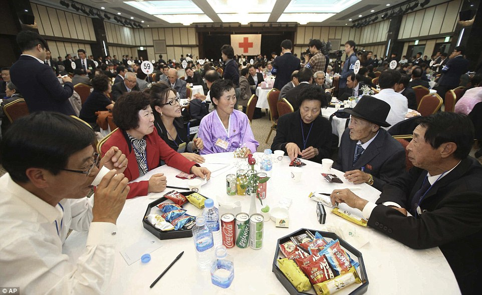

The de-militarized zone runs along the 38th parallel in the Korean Peninsula. Image Source
Korea has always been one landmass, with one ethnic group, speaking one unified language (barring regional variations), and sharing one cultural history. That is, until the past century. With the Japanese invasion and the Communist takeover, Korea soon became a hotspot for political turmoil. This saw many families break apart as people began to flee the peninsula to the United States, Europe and China. During the Korean war, families lost each other in attempts to leave the violence. Following the Korean war, with the establishment of the Demilitarized Zone (DMZ) between the North and the South, many families who had lost each other then were not permanently split as no South Korean citizen can travel to North Korea and it is very difficult for a North Korean to leave the DPRK (Democratic People’s Republic of Korea).
The creation of the DMZ along the 38th parallel had split many families like this. On top of that, those who escape North Korea may never see their family again, if they still had any in the country. However, the DMZ has hosted events in the past that allow citizens of the two countries to reunite with loved ones on the other side of the border. These events show how despite there being differences in the way they are treated by their governments, their shared culture and love have no boundaries.
North and South Koreans reunite with loved ones after years apart. Image Source
The borders here are not only physical boundaries between the two nations, but they also are boundaries of information, knowledge, and people. Most North Koreans are unaware of what is happening in the outside world. Their knowledge stops with whatever is provided to them by the regime, generally information that glorifies the regime while demonizing the west. The DMZ, therefore, acts as a border of free-thought and expression in addition to a geographical boundary.
Borowiec, Steven. "Reunions of Families Split by the Korean War to Resume." Los Angeles Times, 20 Oct. 2015. Web. 14 June 2017.
Lah, Kyung. "Korean War's Toll: Families Divided Forever." CNN. Cable News Network, 25 June 2015. Web. 14 June 2017.
Malm, Sara. "Brought Together for the First Time in 60 Years... and One Last Chance to See Their Loved Ones: Husbands, Wives, Brothers and Sisters Split by North and South Korean Borders Reunite." Daily Mail Online. Associated Newspapers, 20 Oct. 2015. Web. 14 June 2017.
{kind=link}
{kind=link}